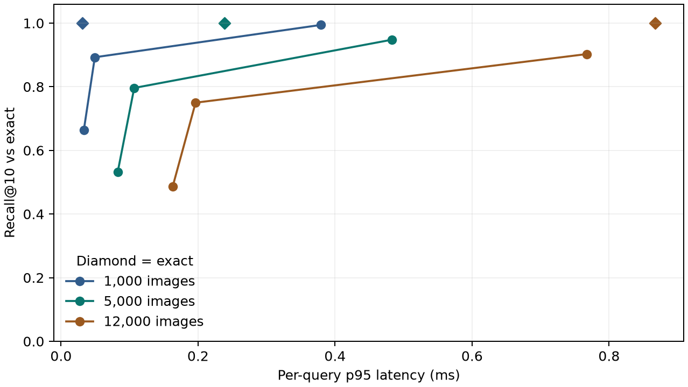

Visual Search Benchmark
Compare exact and approximate image retrieval on Fashion-MNIST.
Try a held-out image
Choose a query, then switch methods. Different class labels are marked below.
Recall versus latency

Sample images from Zalando Research Fashion-MNIST. Code and methodology.